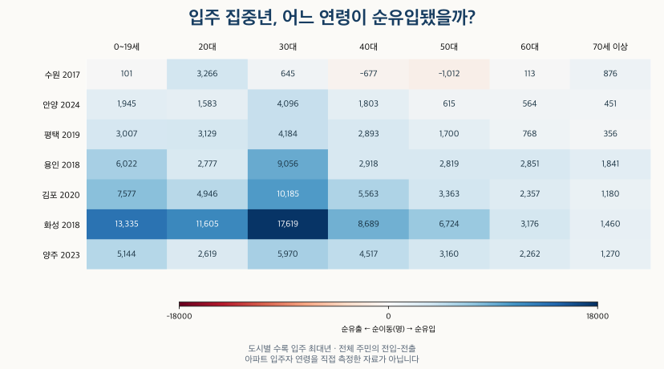
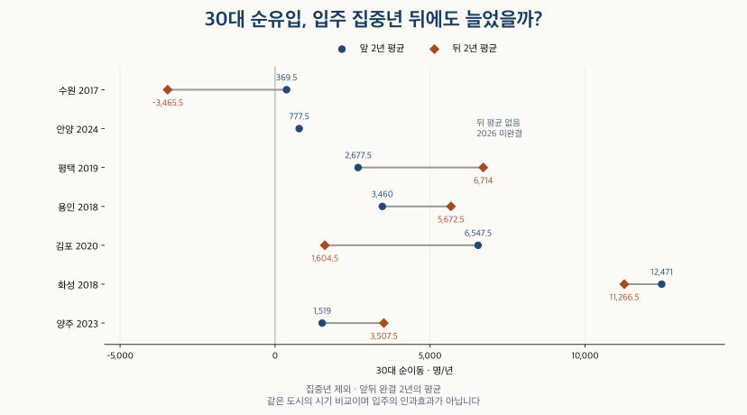

이사와 인구 · 입주 도시의 연령
새 아파트가 많은 도시, 몇 살이 이사 올까? 경기 7시의 연령별 이동
경기 28시의 입주 물량으로 고른 7시에서 전입자의 연령 구성과 순이동을 비교합니다. 입주 집중년 앞뒤 변화, 서울발 비중의 확인 범위, 아파트 입주자와 주민 통계의 차이를 살펴보세요.
분석 기간 · 2010~2025 · 경기 7시 · 서울발 범위는 2024.6~2025.5 | 자료 기준일 · 공급·이동 검산 2026-10-15
새 아파트가 많이 들어서는 도시에는 젊은 가구가 몰릴까요? 입주 물량으로 고른 경기 7개 시에서, 입주가 가장 많았던 해의 전입자 나이와 연령별 순이동을 비교했습니다. 같은 도시라도 들어온 사람의 구성과 들어오고 나간 뒤 남는 순이동은 다른 답을 줍니다.
일곱 도시 모두 집중년 전입자 중 30대 비중이 가장 컸지만, 순이동은 달랐습니다. 수원은 2017년 20대 순유입이 3,266명으로 30대 645명보다 많았고, 40·50대는 순유출이었습니다. 입주 집중년 전후의 변화도 도시마다 달라 ‘입주 물량 증가가 젊은 입주자를 불렀다’고 단정할 수 없습니다.
입주 물량이 많은 도시는 어떻게 골랐나요?
경기도 28개 시의 2010~2025년 수록 입주 세대수 합계 상위 5시를 먼저 골랐습니다. 군은 제외했으며, 미완결인 2026년은 포함하지 않았습니다. 기준은 KB에 수록된 아파트 입주 일정입니다. 실제 입주 완료 가구를 센 수와는 차이가 있습니다.
| 순서 | 도시 | 수록 세대수 |
|---|---|---|
| 1 | 화성 | 157,216 |
| 2 | 수원 | 119,609 |
| 3 | 평택 | 111,259 |
| 4 | 용인 | 104,053 |
| 5 | 김포 | 85,124 |
기간에 따라 도시가 바뀌는지도 확인했습니다. 최근 5년인 2021~2025년으로 좁히면 양주와 안양이 들어옵니다. 두 기준에 한 번이라도 포함된 수원·안양·평택·용인·김포·화성·양주, 일곱 도시를 모두 비교했습니다. 최근에 물량이 늘어난 도시를 긴 누적 합계만으로 놓치지 않기 위한 선택입니다.
| 순서 | 도시 | 수록 세대수 |
|---|---|---|
| 1 | 화성 | 47,478 |
| 2 | 평택 | 36,986 |
| 3 | 수원 | 36,407 |
| 4 | 양주 | 30,224 |
| 5 | 안양 | 29,204 |
이 순서는 실제 이사 가구나 투자 매력의 순위가 아닙니다. 수록되지 않은 달을 실제 입주 0으로 해석하지 않았습니다. 기존 총량·단지 목록 합계·확인된 판교 중첩 물량을 조정한 경우에도 두 상위 목록과 일곱 도시의 집중년은 같았습니다. 다만 관측한 차이에 대한 결과이지, 모든 누락·중복이 없다는 보장은 아닙니다. 일정과 실제 공급의 차이는 아파트 입주 달력에서 더 확인할 수 있습니다.
선정 분모인 경기 28시의 수록 물량 보기
수록 월 수가 192개월보다 적다고 반드시 자료가 누락됐다는 뜻도 아닙니다. 해당 달에 제공처가 기록한 입주 일정이 없을 수 있습니다. 어느 경우든 부재만으로 실제 입주가 없었다고 확정할 수 없습니다. 연도별 수치는 아래 공개 집계 파일에 있습니다.
| 도시 | 2010~2025 세대 | 2021~2025 세대 | 수록 월 수 | 연령 비교 |
|---|---|---|---|---|
| 수원 | 119,609 | 36,407 | 147 | 비교 대상 |
| 성남 | 52,646 | 23,102 | 80 | 선정 외 |
| 의정부 | 49,188 | 17,905 | 128 | 선정 외 |
| 안양 | 47,257 | 29,204 | 127 | 비교 대상 |
| 부천 | 43,629 | 14,278 | 165 | 선정 외 |
| 광명 | 36,318 | 18,528 | 56 | 선정 외 |
| 평택 | 111,259 | 36,986 | 132 | 비교 대상 |
| 동두천 | 4,355 | 2,218 | 27 | 선정 외 |
| 안산 | 33,973 | 6,155 | 99 | 선정 외 |
| 고양 | 75,186 | 17,836 | 84 | 선정 외 |
| 과천 | 12,459 | 8,928 | 13 | 선정 외 |
| 구리 | 12,841 | 1,835 | 36 | 선정 외 |
| 남양주 | 71,339 | 15,584 | 80 | 선정 외 |
| 오산 | 36,164 | 13,923 | 69 | 선정 외 |
| 시흥 | 69,760 | 12,714 | 82 | 선정 외 |
| 군포 | 11,698 | 1,183 | 49 | 선정 외 |
| 의왕 | 18,052 | 6,542 | 43 | 선정 외 |
| 하남 | 54,944 | 14,214 | 64 | 선정 외 |
| 용인 | 104,053 | 26,768 | 146 | 비교 대상 |
| 파주 | 62,811 | 25,434 | 67 | 선정 외 |
| 이천 | 15,344 | 5,865 | 53 | 선정 외 |
| 안성 | 26,478 | 11,268 | 35 | 선정 외 |
| 김포 | 85,124 | 5,296 | 75 | 비교 대상 |
| 화성 | 157,216 | 47,478 | 116 | 비교 대상 |
| 광주 | 33,373 | 13,018 | 47 | 선정 외 |
| 양주 | 45,289 | 30,224 | 59 | 비교 대상 |
| 포천 | 5,184 | 3,845 | 15 | 선정 외 |
| 여주 | 5,747 | 2,976 | 27 | 선정 외 |
전입자의 나이와 순이동은 어떻게 다른가요?
전입자의 나이는 들어온 사람의 구성, 순이동은 전입에서 전출을 뺀 차이입니다. 각 도시에서 2010~2025년 수록 입주 세대수가 가장 큰 해를 ‘입주 집중년’으로 정했습니다. 도시마다 연도가 다르므로 아래 표를 같은 해의 도시 순위로 읽지 않습니다.
| 도시 | 집중년 | 수록 입주 세대 | 0~19세 | 20대 | 30대 | 40대 | 50대 | 60대 | 70세 이상 | 전체 순이동 |
|---|---|---|---|---|---|---|---|---|---|---|
| 수원 | 2017 | 12,829 | 101 | 3,266 | 645 | -677 | -1,012 | 113 | 876 | 3,312 |
| 안양 | 2024 | 8,879 | 1,945 | 1,583 | 4,096 | 1,803 | 615 | 564 | 451 | 11,057 |
| 평택 | 2019 | 17,424 | 3,007 | 3,129 | 4,184 | 2,893 | 1,700 | 768 | 356 | 16,037 |
| 용인 | 2018 | 16,957 | 6,022 | 2,777 | 9,056 | 2,918 | 2,819 | 2,851 | 1,841 | 28,284 |
| 김포 | 2020 | 16,325 | 7,577 | 4,946 | 10,185 | 5,563 | 3,363 | 2,357 | 1,180 | 35,171 |
| 화성 | 2018 | 32,708 | 13,335 | 11,605 | 17,619 | 8,689 | 6,724 | 3,176 | 1,460 | 62,608 |
| 양주 | 2023 | 11,523 | 5,144 | 2,619 | 5,970 | 4,517 | 3,160 | 2,262 | 1,270 | 24,942 |

화성의 2018년 30대 순유입은 17,619명, 김포의 2020년은 10,185명이었습니다. 그러나 수원의 2017년에는 20대 순유입이 3,266명으로 30대 645명보다 컸고, 40대 −677명·50대 −1,012명이었습니다. 새 아파트가 많이 수록된 해라고 모든 연령이 순유입된 것은 아닙니다.
‘이사 온 사람 중 몇 살이 많았나’를 보려면 전입자 전체를 분모로 해야 합니다. 순이동 합계로 나눈 비율은 나간 사람까지 반영하므로 전입자의 연령 구성으로 쓸 수 없습니다.
| 도시 | 집중년 | 전체 전입(명) | 0~19세 | 20대 | 30대 | 40대 | 50대 | 60대 | 70세 이상 |
|---|---|---|---|---|---|---|---|---|---|
| 수원 | 2017 | 177,059 | 17.9% | 23.0% | 23.6% | 14.6% | 11.1% | 5.5% | 4.3% |
| 안양 | 2024 | 83,735 | 16.4% | 17.2% | 25.3% | 15.0% | 12.2% | 8.9% | 5.0% |
| 평택 | 2019 | 93,713 | 18.6% | 21.7% | 22.4% | 16.3% | 12.0% | 5.7% | 3.4% |
| 용인 | 2018 | 177,079 | 21.8% | 16.5% | 22.7% | 15.8% | 10.9% | 7.0% | 5.3% |
| 김포 | 2020 | 111,331 | 21.0% | 15.0% | 24.2% | 17.0% | 10.9% | 7.5% | 4.4% |
| 화성 | 2018 | 170,212 | 21.5% | 18.0% | 25.7% | 15.6% | 10.5% | 5.4% | 3.2% |
| 양주 | 2023 | 55,052 | 19.3% | 15.2% | 21.0% | 17.0% | 12.8% | 9.1% | 5.7% |
집중년 전입자 구성에서는 일곱 도시 모두 30대가 가장 컸습니다. 수원도 전입자 구성의 1위와 순이동의 1위가 달랐습니다. 전입·전출 양쪽을 보지 않으면 이 차이를 놓치게 됩니다. 같은 시 안에서 읍면동 경계를 넘은 이사도 전입에 포함되고, 시 전체 순이동에서는 같은 시 안 전입·전출이 상쇄됩니다.
이 수치는 아파트 외 주택의 주민도 포함합니다. 30대 전입자가 새 아파트에 입주했는지, 어느 가구의 구성원인지 연결하지 않았습니다. 인구 대비 이동률도 아니므로 큰 도시의 절대 인원과 작은 도시의 비율을 바로 비교하지 않습니다.
집중년 전후에도 순유입이 늘었나요?
도시마다 방향이 다릅니다. 집중년 자체를 빼고 앞 2년과 뒤 2년의 연평균 순이동을 비교했습니다. 예를 들어 평택의 집중년 2019년은 앞 2017~2018년, 뒤 2020~2021년을 비교합니다. 아래는 전입 구성에서 가장 큰 30대이며, 다른 모든 연령의 결과도 이어서 제공합니다.
| 도시 | 집중년 | 연령 | 앞 평균 | 뒤 평균 | 뒤−앞 |
|---|---|---|---|---|---|
| 수원 | 2017 | 30대 | 369.5 | -3,465.5 | -3,835 |
| 안양 | 2024 | 30대 | 777.5 | — | — |
| 평택 | 2019 | 30대 | 2,677.5 | 6,714 | 4,036.5 |
| 용인 | 2018 | 30대 | 3,460 | 5,672.5 | 2,212.5 |
| 김포 | 2020 | 30대 | 6,547.5 | 1,604.5 | -4,943 |
| 화성 | 2018 | 30대 | 12,471 | 11,266.5 | -1,204.5 |
| 양주 | 2023 | 30대 | 1,519 | 3,507.5 | 1,988.5 |

평택은 앞 평균 2,677.5명에서 뒤 6,714명으로 늘었지만, 김포는 6,547.5명에서 1,604.5명으로 줄었습니다. 화성도 12,471명에서 11,266.5명으로 낮아졌습니다. 수원은 369.5명 순유입에서 3,465.5명 순유출로 바뀌었습니다. 집중년 뒤에도 순유입이 계속 커진다는 하나의 설명으로 묶기 어렵습니다.
안양의 집중년은 2024년입니다. 뒤 2년에 2026년이 들어가므로 완결된 2025년만으로 2년 평균을 대신하지 않았습니다. 앞뒤 1년 비교에서는 2023년과 2025년을 그대로 확인할 수 있습니다.
모든 연령의 앞뒤 1년·2년 비교 보기
앞뒤 기간에 속한 모든 연도가 있어야 평균을 표시했습니다. 0~19세부터 70세 이상까지 모두 유지했고, 결과가 다른 기간을 골라 대체하지 않았습니다.
| 도시 | 집중년 | 연령 | 앞 평균 | 뒤 평균 | 뒤−앞 |
|---|---|---|---|---|---|
| 수원 | 2017 | 0~19세 | -955 | -1,825 | -870 |
| 수원 | 2017 | 20대 | 3,245 | 2,648 | -597 |
| 수원 | 2017 | 30대 | 349 | -3,109 | -3,458 |
| 수원 | 2017 | 40대 | -634 | -1,557 | -923 |
| 수원 | 2017 | 50대 | -808 | -2,152 | -1,344 |
| 수원 | 2017 | 60대 | 205 | -291 | -496 |
| 수원 | 2017 | 70세 이상 | 833 | 528 | -305 |
| 안양 | 2024 | 0~19세 | -698 | 1,175 | 1,873 |
| 안양 | 2024 | 20대 | -692 | 963 | 1,655 |
| 안양 | 2024 | 30대 | -547 | 3,016 | 3,563 |
| 안양 | 2024 | 40대 | -430 | 797 | 1,227 |
| 안양 | 2024 | 50대 | -849 | -42 | 807 |
| 안양 | 2024 | 60대 | -685 | -170 | 515 |
| 안양 | 2024 | 70세 이상 | -86 | 93 | 179 |
| 평택 | 2019 | 0~19세 | 2,252 | 4,025 | 1,773 |
| 평택 | 2019 | 20대 | 2,708 | 5,194 | 2,486 |
| 평택 | 2019 | 30대 | 3,123 | 6,099 | 2,976 |
| 평택 | 2019 | 40대 | 2,332 | 3,881 | 1,549 |
| 평택 | 2019 | 50대 | 1,554 | 2,302 | 748 |
| 평택 | 2019 | 60대 | 465 | 984 | 519 |
| 평택 | 2019 | 70세 이상 | 347 | 533 | 186 |
| 용인 | 2018 | 0~19세 | 1,392 | 4,014 | 2,622 |
| 용인 | 2018 | 20대 | 746 | 3,616 | 2,870 |
| 용인 | 2018 | 30대 | 3,469 | 7,353 | 3,884 |
| 용인 | 2018 | 40대 | 344 | 2,181 | 1,837 |
| 용인 | 2018 | 50대 | 1,069 | 2,039 | 970 |
| 용인 | 2018 | 60대 | 1,299 | 2,023 | 724 |
| 용인 | 2018 | 70세 이상 | 1,234 | 1,738 | 504 |
| 김포 | 2020 | 0~19세 | 2,242 | 1,672 | -570 |
| 김포 | 2020 | 20대 | 2,119 | 2,079 | -40 |
| 김포 | 2020 | 30대 | 3,780 | 3,516 | -264 |
| 김포 | 2020 | 40대 | 1,588 | 1,266 | -322 |
| 김포 | 2020 | 50대 | 1,276 | 1,011 | -265 |
| 김포 | 2020 | 60대 | 916 | 993 | 77 |
| 김포 | 2020 | 70세 이상 | 469 | 731 | 262 |
| 화성 | 2018 | 0~19세 | 8,899 | 10,809 | 1,910 |
| 화성 | 2018 | 20대 | 9,655 | 10,290 | 635 |
| 화성 | 2018 | 30대 | 12,993 | 13,611 | 618 |
| 화성 | 2018 | 40대 | 5,887 | 7,510 | 1,623 |
| 화성 | 2018 | 50대 | 4,609 | 5,718 | 1,109 |
| 화성 | 2018 | 60대 | 2,219 | 2,707 | 488 |
| 화성 | 2018 | 70세 이상 | 951 | 1,193 | 242 |
| 양주 | 2023 | 0~19세 | 1,553 | 3,736 | 2,183 |
| 양주 | 2023 | 20대 | 456 | 2,584 | 2,128 |
| 양주 | 2023 | 30대 | 1,752 | 5,462 | 3,710 |
| 양주 | 2023 | 40대 | 1,365 | 3,442 | 2,077 |
| 양주 | 2023 | 50대 | 1,318 | 2,764 | 1,446 |
| 양주 | 2023 | 60대 | 761 | 1,960 | 1,199 |
| 양주 | 2023 | 70세 이상 | 701 | 1,251 | 550 |
| 도시 | 집중년 | 연령 | 앞 평균 | 뒤 평균 | 뒤−앞 |
|---|---|---|---|---|---|
| 수원 | 2017 | 0~19세 | -1,042 | -2,116 | -1,074 |
| 수원 | 2017 | 20대 | 3,165 | 1,824 | -1,341 |
| 수원 | 2017 | 30대 | 369.5 | -3,465.5 | -3,835 |
| 수원 | 2017 | 40대 | -672.5 | -1,858 | -1,185.5 |
| 수원 | 2017 | 50대 | -906.5 | -2,438 | -1,531.5 |
| 수원 | 2017 | 60대 | 263 | -622.5 | -885.5 |
| 수원 | 2017 | 70세 이상 | 872 | 263 | -609 |
| 안양 | 2024 | 0~19세 | -163 | — | — |
| 안양 | 2024 | 20대 | -570.5 | — | — |
| 안양 | 2024 | 30대 | 777.5 | — | — |
| 안양 | 2024 | 40대 | -67 | — | — |
| 안양 | 2024 | 50대 | -651 | — | — |
| 안양 | 2024 | 60대 | -492 | — | — |
| 안양 | 2024 | 70세 이상 | 10 | — | — |
| 평택 | 2019 | 0~19세 | 1,727 | 4,060.5 | 2,333.5 |
| 평택 | 2019 | 20대 | 2,457.5 | 6,109.5 | 3,652 |
| 평택 | 2019 | 30대 | 2,677.5 | 6,714 | 4,036.5 |
| 평택 | 2019 | 40대 | 2,052 | 4,110 | 2,058 |
| 평택 | 2019 | 50대 | 1,293.5 | 2,772 | 1,478.5 |
| 평택 | 2019 | 60대 | 398.5 | 1,262.5 | 864 |
| 평택 | 2019 | 70세 이상 | 258 | 669 | 411 |
| 용인 | 2018 | 0~19세 | 1,582.5 | 3,002.5 | 1,420 |
| 용인 | 2018 | 20대 | 1,964.5 | 3,058.5 | 1,094 |
| 용인 | 2018 | 30대 | 3,460 | 5,672.5 | 2,212.5 |
| 용인 | 2018 | 40대 | -93 | 1,498.5 | 1,591.5 |
| 용인 | 2018 | 50대 | 682.5 | 1,472 | 789.5 |
| 용인 | 2018 | 60대 | 1,078 | 1,658 | 580 |
| 용인 | 2018 | 70세 이상 | 1,094 | 1,466.5 | 372.5 |
| 김포 | 2020 | 0~19세 | 4,433 | -95.5 | -4,528.5 |
| 김포 | 2020 | 20대 | 2,875.5 | 978 | -1,897.5 |
| 김포 | 2020 | 30대 | 6,547.5 | 1,604.5 | -4,943 |
| 김포 | 2020 | 40대 | 2,812 | 99 | -2,713 |
| 김포 | 2020 | 50대 | 2,036 | 452.5 | -1,583.5 |
| 김포 | 2020 | 60대 | 1,454.5 | 606.5 | -848 |
| 김포 | 2020 | 70세 이상 | 701 | 512 | -189 |
| 화성 | 2018 | 0~19세 | 8,620.5 | 8,190 | -430.5 |
| 화성 | 2018 | 20대 | 8,380 | 10,069 | 1,689 |
| 화성 | 2018 | 30대 | 12,471 | 11,266.5 | -1,204.5 |
| 화성 | 2018 | 40대 | 5,424 | 5,981.5 | 557.5 |
| 화성 | 2018 | 50대 | 4,095 | 4,809.5 | 714.5 |
| 화성 | 2018 | 60대 | 2,097.5 | 2,514 | 416.5 |
| 화성 | 2018 | 70세 이상 | 1,036.5 | 1,171 | 134.5 |
| 양주 | 2023 | 0~19세 | 1,457.5 | 2,346.5 | 889 |
| 양주 | 2023 | 20대 | 397 | 1,735.5 | 1,338.5 |
| 양주 | 2023 | 30대 | 1,519 | 3,507.5 | 1,988.5 |
| 양주 | 2023 | 40대 | 1,226 | 2,170 | 944 |
| 양주 | 2023 | 50대 | 1,134.5 | 1,975 | 840.5 |
| 양주 | 2023 | 60대 | 737.5 | 1,462.5 | 725 |
| 양주 | 2023 | 70세 이상 | 773.5 | 1,043.5 | 270 |
입주가 이동을 일으켰는지를 검증한 결과는 아닙니다. 물량이 많은 해를 사후에 고른 비교이고, 일자리·주택 가격·교육·가구 생애주기가 함께 변합니다. 같은 연령대의 해마다 다른 사람을 센 것이므로 동일한 주민이 나이 들어 이동한 경로로 해석하지도 않습니다.
서울에서 온 비중은 알 수 있나요?
이 자료만으로는 정확한 서울발 비중을 확인할 수 없습니다. 확인한 전입 출발지 상위 목록에는 경기 지역만 표시됐지만, 전국의 모든 출발지를 포괄하는지 불명확합니다. 목록에 서울이 없다는 이유로 서울발 0명이라고 쓰지 않았습니다.
대신 전체 전입 중 시도 경계를 넘어온 수를 사용하면 최대 범위를 정할 수 있습니다. 경기 도시로 들어온 모든 시도간 전입이 서울발이라고 가정한 값이 상한입니다. 실제로는 서울 외 시도도 포함되므로 실제 서울발 비중은 이보다 작거나 같습니다.
| 도시 | 전체 전입(명) | 시도간 전입(명) | 서울발 비중의 가능한 범위 |
|---|---|---|---|
| 수원 | 143,675 | 40,618 | 0~28.3% |
| 안양 | 91,609 | 23,470 | 0~25.6% |
| 평택 | 90,266 | 29,347 | 0~32.5% |
| 용인 | 139,808 | 42,625 | 0~30.5% |
| 김포 | 52,212 | 24,783 | 0~47.5% |
| 화성 | 134,017 | 34,977 | 0~26.1% |
| 양주 | 44,071 | 14,716 | 0~33.4% |
0~상한은 추정치나 신뢰구간이 아닙니다. 0은 서울발 인원이 확인되지 않았다는 뜻의 범위 끝입니다. 출발지 목록과 맞춘 2024년 6월~2025년 5월의 별도 비교이며, 과거 집중년이나 연령별 서울발 비중을 대신하지 않습니다. 범위가 넓은 도시를 ‘서울 사람들이 더 선호하는 도시’라고 순위 매길 근거도 없습니다.
이사 후보지를 볼 때 무엇을 확인할까요?
‘신축이 많아 젊은 가구가 몰린다’는 문장을 보면 다음 순서로 숫자를 확인해 보세요.
- 도시 선정 기간을 확인하세요. 16년 누적과 최근 5년의 상위 도시는 다릅니다. 관심 단지의 실제 입주 일정도 별도로 확인합니다.
- 전입 구성과 순이동을 나눠 보세요. 전입자가 많아도 전출이 더 많으면 순유출입니다. 해당 도시의 다른 연령대도 함께 읽습니다.
- 집중년 앞뒤와 빠진 연도를 확인하세요. 한 해의 봉우리나 일부 기간만으로 지속적인 수요를 예상하지 않습니다.
- 주민 통계와 원하는 주택을 연결해 확인하세요. 도시 전체의 주민 연령만으로 관심 아파트의 가구 구성·통학·통근 여건을 알 수는 없습니다.
지역의 주민 이동은 후보지를 이해할 출발점입니다. 입주자 구성이나 향후 가격에 대한 확정적인 답은 아닙니다. 광역 연령 흐름과의 차이는 서울·경기 16년 연령별 순이동과 함께 확인해 보세요.
일곱 도시의 2010~2025년 전입·전출·순이동 전체 표
연령별 명 단위입니다. 앞뒤 비교에 사용한 모든 해와 집중년을 포함합니다. 같은 사람의 장기 추적 자료가 아닙니다.
| 연도 | 구분 | 0~19세 | 20대 | 30대 | 40대 | 50대 | 60대 | 70세 이상 | 합계 |
|---|---|---|---|---|---|---|---|---|---|
| 2010 | 전입 | 40,393 | 42,953 | 43,916 | 27,876 | 15,412 | 7,517 | 6,335 | 184,402 |
| 2010 | 전출 | 44,046 | 42,022 | 47,758 | 31,153 | 17,514 | 8,116 | 6,493 | 197,102 |
| 2010 | 순이동 | -3,653 | 931 | -3,842 | -3,277 | -2,102 | -599 | -158 | -12,700 |
| 2011 | 전입 | 44,688 | 42,529 | 47,973 | 30,977 | 19,571 | 8,842 | 7,455 | 202,035 |
| 2011 | 전출 | 43,978 | 40,364 | 47,210 | 31,266 | 19,854 | 8,547 | 6,851 | 198,070 |
| 2011 | 순이동 | 710 | 2,165 | 763 | -289 | -283 | 295 | 604 | 3,965 |
| 2012 | 전입 | 45,431 | 40,620 | 48,013 | 31,691 | 19,260 | 7,995 | 7,103 | 200,113 |
| 2012 | 전출 | 38,823 | 35,211 | 42,228 | 28,775 | 17,726 | 7,128 | 5,974 | 175,865 |
| 2012 | 순이동 | 6,608 | 5,409 | 5,785 | 2,916 | 1,534 | 867 | 1,129 | 24,248 |
| 2013 | 전입 | 43,545 | 38,783 | 47,260 | 31,689 | 19,389 | 7,764 | 7,070 | 195,500 |
| 2013 | 전출 | 38,444 | 33,346 | 42,294 | 29,147 | 18,394 | 7,267 | 6,322 | 175,214 |
| 2013 | 순이동 | 5,101 | 5,437 | 4,966 | 2,542 | 995 | 497 | 748 | 20,286 |
| 2014 | 전입 | 40,833 | 40,134 | 48,537 | 30,149 | 20,709 | 8,812 | 7,279 | 196,453 |
| 2014 | 전출 | 36,798 | 34,901 | 43,333 | 28,785 | 19,858 | 7,989 | 6,531 | 178,195 |
| 2014 | 순이동 | 4,035 | 5,233 | 5,204 | 1,364 | 851 | 823 | 748 | 18,258 |
| 2015 | 전입 | 36,015 | 40,986 | 45,435 | 28,768 | 21,200 | 9,518 | 7,715 | 189,637 |
| 2015 | 전출 | 37,144 | 37,901 | 45,045 | 29,479 | 22,205 | 9,197 | 6,804 | 187,775 |
| 2015 | 순이동 | -1,129 | 3,085 | 390 | -711 | -1,005 | 321 | 911 | 1,862 |
| 2016 | 전입 | 30,394 | 39,115 | 41,203 | 25,313 | 19,412 | 9,326 | 7,447 | 172,210 |
| 2016 | 전출 | 31,349 | 35,870 | 40,854 | 25,947 | 20,220 | 9,121 | 6,614 | 169,975 |
| 2016 | 순이동 | -955 | 3,245 | 349 | -634 | -808 | 205 | 833 | 2,235 |
| 2017 | 전입 | 31,684 | 40,787 | 41,806 | 25,799 | 19,603 | 9,819 | 7,561 | 177,059 |
| 2017 | 전출 | 31,583 | 37,521 | 41,161 | 26,476 | 20,615 | 9,706 | 6,685 | 173,747 |
| 2017 | 순이동 | 101 | 3,266 | 645 | -677 | -1,012 | 113 | 876 | 3,312 |
| 2018 | 전입 | 31,477 | 44,250 | 42,030 | 26,798 | 22,031 | 12,114 | 9,106 | 187,806 |
| 2018 | 전출 | 33,302 | 41,602 | 45,139 | 28,355 | 24,183 | 12,405 | 8,578 | 193,564 |
| 2018 | 순이동 | -1,825 | 2,648 | -3,109 | -1,557 | -2,152 | -291 | 528 | -5,758 |
| 2019 | 전입 | 28,550 | 42,953 | 39,073 | 25,018 | 19,336 | 10,658 | 7,748 | 173,336 |
| 2019 | 전출 | 30,957 | 41,953 | 42,895 | 27,177 | 22,060 | 11,612 | 7,750 | 184,404 |
| 2019 | 순이동 | -2,407 | 1,000 | -3,822 | -2,159 | -2,724 | -954 | -2 | -11,068 |
| 2020 | 전입 | 23,864 | 44,815 | 37,906 | 23,264 | 19,222 | 11,241 | 7,892 | 168,204 |
| 2020 | 전출 | 27,303 | 43,414 | 41,463 | 25,554 | 21,540 | 12,387 | 7,857 | 179,518 |
| 2020 | 순이동 | -3,439 | 1,401 | -3,557 | -2,290 | -2,318 | -1,146 | 35 | -11,314 |
| 2021 | 전입 | 26,367 | 48,179 | 41,472 | 25,066 | 20,514 | 12,942 | 8,718 | 183,258 |
| 2021 | 전출 | 27,823 | 44,553 | 41,583 | 26,744 | 22,468 | 13,700 | 8,484 | 185,355 |
| 2021 | 순이동 | -1,456 | 3,626 | -111 | -1,678 | -1,954 | -758 | 234 | -2,097 |
| 2022 | 전입 | 23,840 | 44,046 | 39,147 | 22,179 | 18,597 | 11,640 | 7,269 | 166,718 |
| 2022 | 전출 | 22,670 | 39,698 | 36,259 | 22,073 | 19,057 | 12,232 | 7,023 | 159,012 |
| 2022 | 순이동 | 1,170 | 4,348 | 2,888 | 106 | -460 | -592 | 246 | 7,706 |
| 2023 | 전입 | 24,043 | 42,671 | 41,239 | 22,799 | 18,197 | 11,669 | 7,406 | 168,024 |
| 2023 | 전출 | 23,535 | 38,367 | 39,987 | 23,058 | 18,599 | 11,842 | 6,840 | 162,228 |
| 2023 | 순이동 | 508 | 4,304 | 1,252 | -259 | -402 | -173 | 566 | 5,796 |
| 2024 | 전입 | 19,125 | 41,359 | 37,480 | 19,157 | 16,626 | 11,039 | 7,040 | 151,826 |
| 2024 | 전출 | 21,148 | 37,677 | 39,845 | 21,326 | 18,208 | 11,974 | 6,837 | 157,015 |
| 2024 | 순이동 | -2,023 | 3,682 | -2,365 | -2,169 | -1,582 | -935 | 203 | -5,189 |
| 2025 | 전입 | 17,872 | 39,190 | 36,607 | 18,179 | 15,515 | 10,716 | 7,072 | 145,151 |
| 2025 | 전출 | 19,476 | 37,289 | 39,393 | 20,214 | 17,554 | 12,284 | 6,931 | 153,141 |
| 2025 | 순이동 | -1,604 | 1,901 | -2,786 | -2,035 | -2,039 | -1,568 | 141 | -7,990 |
| 연도 | 구분 | 0~19세 | 20대 | 30대 | 40대 | 50대 | 60대 | 70세 이상 | 합계 |
|---|---|---|---|---|---|---|---|---|---|
| 2010 | 전입 | 22,711 | 18,502 | 23,950 | 16,433 | 9,626 | 4,351 | 3,758 | 99,331 |
| 2010 | 전출 | 24,137 | 18,456 | 24,220 | 17,789 | 10,447 | 4,881 | 3,818 | 103,748 |
| 2010 | 순이동 | -1,426 | 46 | -270 | -1,356 | -821 | -530 | -60 | -4,417 |
| 2011 | 전입 | 20,963 | 16,085 | 21,486 | 15,409 | 9,678 | 4,151 | 3,762 | 91,534 |
| 2011 | 전출 | 22,867 | 17,257 | 23,736 | 16,795 | 11,429 | 4,857 | 4,217 | 101,158 |
| 2011 | 순이동 | -1,904 | -1,172 | -2,250 | -1,386 | -1,751 | -706 | -455 | -9,624 |
| 2012 | 전입 | 21,384 | 16,975 | 22,494 | 15,784 | 11,319 | 4,843 | 4,165 | 96,964 |
| 2012 | 전출 | 23,070 | 17,372 | 23,581 | 17,487 | 12,898 | 5,411 | 4,663 | 104,482 |
| 2012 | 순이동 | -1,686 | -397 | -1,087 | -1,703 | -1,579 | -568 | -498 | -7,518 |
| 2013 | 전입 | 17,585 | 14,539 | 20,146 | 13,419 | 9,794 | 4,174 | 3,678 | 83,335 |
| 2013 | 전출 | 19,330 | 15,154 | 20,854 | 14,996 | 11,218 | 4,584 | 4,063 | 90,199 |
| 2013 | 순이동 | -1,745 | -615 | -708 | -1,577 | -1,424 | -410 | -385 | -6,864 |
| 2014 | 전입 | 16,637 | 14,525 | 19,006 | 13,526 | 10,204 | 4,194 | 3,635 | 81,727 |
| 2014 | 전출 | 19,059 | 15,409 | 21,468 | 15,147 | 11,725 | 5,008 | 4,111 | 91,927 |
| 2014 | 순이동 | -2,422 | -884 | -2,462 | -1,621 | -1,521 | -814 | -476 | -10,200 |
| 2015 | 전입 | 16,425 | 15,590 | 19,409 | 13,796 | 11,246 | 4,965 | 3,836 | 85,267 |
| 2015 | 전출 | 17,649 | 16,237 | 20,656 | 14,743 | 12,667 | 5,585 | 4,093 | 91,630 |
| 2015 | 순이동 | -1,224 | -647 | -1,247 | -947 | -1,421 | -620 | -257 | -6,363 |
| 2016 | 전입 | 18,473 | 17,180 | 20,687 | 15,551 | 13,254 | 6,337 | 4,630 | 96,112 |
| 2016 | 전출 | 18,888 | 17,344 | 21,053 | 16,030 | 14,073 | 7,031 | 4,948 | 99,367 |
| 2016 | 순이동 | -415 | -164 | -366 | -479 | -819 | -694 | -318 | -3,255 |
| 2017 | 전입 | 15,492 | 15,615 | 17,722 | 13,711 | 11,665 | 6,057 | 4,517 | 84,779 |
| 2017 | 전출 | 17,296 | 17,220 | 20,241 | 15,144 | 13,789 | 7,355 | 5,260 | 96,305 |
| 2017 | 순이동 | -1,804 | -1,605 | -2,519 | -1,433 | -2,124 | -1,298 | -743 | -11,526 |
| 2018 | 전입 | 12,340 | 14,283 | 16,505 | 11,336 | 9,651 | 5,353 | 3,999 | 73,467 |
| 2018 | 전출 | 14,983 | 16,256 | 19,107 | 13,141 | 11,917 | 6,599 | 4,363 | 86,366 |
| 2018 | 순이동 | -2,643 | -1,973 | -2,602 | -1,805 | -2,266 | -1,246 | -364 | -12,899 |
| 2019 | 전입 | 12,431 | 14,255 | 16,187 | 11,194 | 9,153 | 5,345 | 3,803 | 72,368 |
| 2019 | 전출 | 14,559 | 15,952 | 18,473 | 12,692 | 11,489 | 6,405 | 4,145 | 83,715 |
| 2019 | 순이동 | -2,128 | -1,697 | -2,286 | -1,498 | -2,336 | -1,060 | -342 | -11,347 |
| 2020 | 전입 | 12,659 | 15,860 | 16,973 | 11,932 | 10,931 | 7,009 | 4,618 | 79,982 |
| 2020 | 전출 | 15,500 | 19,110 | 20,347 | 14,190 | 14,288 | 8,963 | 5,547 | 97,945 |
| 2020 | 순이동 | -2,841 | -3,250 | -3,374 | -2,258 | -3,357 | -1,954 | -929 | -17,963 |
| 2021 | 전입 | 14,070 | 16,615 | 20,515 | 12,638 | 10,925 | 7,656 | 4,730 | 87,149 |
| 2021 | 전출 | 14,146 | 17,387 | 18,991 | 12,737 | 12,413 | 8,820 | 5,070 | 89,564 |
| 2021 | 순이동 | -76 | -772 | 1,524 | -99 | -1,488 | -1,164 | -340 | -2,415 |
| 2022 | 전입 | 10,273 | 13,240 | 16,622 | 9,637 | 8,252 | 6,035 | 3,696 | 67,755 |
| 2022 | 전출 | 9,901 | 13,689 | 14,520 | 9,341 | 8,705 | 6,334 | 3,590 | 66,080 |
| 2022 | 순이동 | 372 | -449 | 2,102 | 296 | -453 | -299 | 106 | 1,675 |
| 2023 | 전입 | 8,857 | 11,458 | 14,560 | 8,285 | 6,865 | 4,855 | 3,071 | 57,951 |
| 2023 | 전출 | 9,555 | 12,150 | 15,107 | 8,715 | 7,714 | 5,540 | 3,157 | 61,938 |
| 2023 | 순이동 | -698 | -692 | -547 | -430 | -849 | -685 | -86 | -3,987 |
| 2024 | 전입 | 13,724 | 14,441 | 21,217 | 12,531 | 10,184 | 7,424 | 4,214 | 83,735 |
| 2024 | 전출 | 11,779 | 12,858 | 17,121 | 10,728 | 9,569 | 6,860 | 3,763 | 72,678 |
| 2024 | 순이동 | 1,945 | 1,583 | 4,096 | 1,803 | 615 | 564 | 451 | 11,057 |
| 2025 | 전입 | 11,624 | 13,431 | 20,539 | 10,745 | 8,828 | 6,621 | 4,340 | 76,128 |
| 2025 | 전출 | 10,449 | 12,468 | 17,523 | 9,948 | 8,870 | 6,791 | 4,247 | 70,296 |
| 2025 | 순이동 | 1,175 | 963 | 3,016 | 797 | -42 | -170 | 93 | 5,832 |
| 연도 | 구분 | 0~19세 | 20대 | 30대 | 40대 | 50대 | 60대 | 70세 이상 | 합계 |
|---|---|---|---|---|---|---|---|---|---|
| 2010 | 전입 | 16,589 | 13,444 | 15,743 | 10,788 | 5,963 | 2,965 | 2,423 | 67,915 |
| 2010 | 전출 | 17,286 | 12,584 | 15,729 | 10,771 | 5,764 | 2,779 | 2,371 | 67,284 |
| 2010 | 순이동 | -697 | 860 | 14 | 17 | 199 | 186 | 52 | 631 |
| 2011 | 전입 | 18,286 | 13,715 | 17,475 | 11,605 | 6,721 | 2,985 | 2,632 | 73,419 |
| 2011 | 전출 | 17,492 | 12,361 | 15,886 | 10,914 | 6,347 | 2,811 | 2,487 | 68,298 |
| 2011 | 순이동 | 794 | 1,354 | 1,589 | 691 | 374 | 174 | 145 | 5,121 |
| 2012 | 전입 | 17,032 | 13,504 | 17,525 | 11,521 | 6,918 | 3,193 | 2,740 | 72,433 |
| 2012 | 전출 | 16,238 | 12,283 | 15,566 | 11,051 | 6,699 | 3,069 | 2,733 | 67,639 |
| 2012 | 순이동 | 794 | 1,221 | 1,959 | 470 | 219 | 124 | 7 | 4,794 |
| 2013 | 전입 | 17,074 | 13,173 | 17,496 | 11,583 | 7,116 | 2,947 | 2,639 | 72,028 |
| 2013 | 전출 | 16,097 | 11,930 | 15,471 | 10,927 | 6,680 | 2,903 | 2,697 | 66,705 |
| 2013 | 순이동 | 977 | 1,243 | 2,025 | 656 | 436 | 44 | -58 | 5,323 |
| 2014 | 전입 | 14,976 | 12,926 | 15,945 | 11,283 | 7,364 | 3,185 | 2,829 | 68,508 |
| 2014 | 전출 | 14,363 | 11,660 | 14,186 | 10,452 | 6,946 | 3,041 | 2,753 | 63,401 |
| 2014 | 순이동 | 613 | 1,266 | 1,759 | 831 | 418 | 144 | 76 | 5,107 |
| 2015 | 전입 | 16,004 | 14,872 | 17,656 | 12,868 | 8,918 | 3,917 | 3,021 | 77,256 |
| 2015 | 전출 | 14,991 | 12,873 | 15,337 | 11,437 | 7,898 | 3,425 | 2,902 | 68,863 |
| 2015 | 순이동 | 1,013 | 1,999 | 2,319 | 1,431 | 1,020 | 492 | 119 | 8,393 |
| 2016 | 전입 | 14,977 | 14,724 | 16,920 | 12,521 | 9,003 | 3,940 | 3,094 | 75,179 |
| 2016 | 전출 | 13,894 | 12,956 | 14,684 | 11,139 | 7,931 | 3,618 | 2,940 | 67,162 |
| 2016 | 순이동 | 1,083 | 1,768 | 2,236 | 1,382 | 1,072 | 322 | 154 | 8,017 |
| 2017 | 전입 | 14,928 | 15,778 | 17,391 | 13,044 | 8,964 | 3,944 | 2,734 | 76,783 |
| 2017 | 전출 | 13,726 | 13,571 | 15,159 | 11,272 | 7,931 | 3,612 | 2,565 | 67,836 |
| 2017 | 순이동 | 1,202 | 2,207 | 2,232 | 1,772 | 1,033 | 332 | 169 | 8,947 |
| 2018 | 전입 | 17,027 | 18,027 | 19,683 | 14,677 | 10,606 | 4,628 | 3,202 | 87,850 |
| 2018 | 전출 | 14,775 | 15,319 | 16,560 | 12,345 | 9,052 | 4,163 | 2,855 | 75,069 |
| 2018 | 순이동 | 2,252 | 2,708 | 3,123 | 2,332 | 1,554 | 465 | 347 | 12,781 |
| 2019 | 전입 | 17,402 | 20,299 | 20,991 | 15,267 | 11,227 | 5,320 | 3,207 | 93,713 |
| 2019 | 전출 | 14,395 | 17,170 | 16,807 | 12,374 | 9,527 | 4,552 | 2,851 | 77,676 |
| 2019 | 순이동 | 3,007 | 3,129 | 4,184 | 2,893 | 1,700 | 768 | 356 | 16,037 |
| 2020 | 전입 | 17,473 | 23,390 | 23,321 | 16,650 | 12,608 | 6,037 | 3,619 | 103,098 |
| 2020 | 전출 | 13,448 | 18,196 | 17,222 | 12,769 | 10,306 | 5,053 | 3,086 | 80,080 |
| 2020 | 순이동 | 4,025 | 5,194 | 6,099 | 3,881 | 2,302 | 984 | 533 | 23,018 |
| 2021 | 전입 | 17,571 | 27,550 | 26,169 | 17,933 | 14,288 | 7,588 | 4,246 | 115,345 |
| 2021 | 전출 | 13,475 | 20,525 | 18,840 | 13,594 | 11,046 | 6,047 | 3,441 | 86,968 |
| 2021 | 순이동 | 4,096 | 7,025 | 7,329 | 4,339 | 3,242 | 1,541 | 805 | 28,377 |
| 2022 | 전입 | 13,635 | 24,192 | 21,439 | 15,180 | 12,028 | 6,412 | 3,638 | 96,524 |
| 2022 | 전출 | 11,859 | 19,767 | 17,643 | 12,631 | 10,440 | 6,039 | 3,442 | 81,821 |
| 2022 | 순이동 | 1,776 | 4,425 | 3,796 | 2,549 | 1,588 | 373 | 196 | 14,703 |
| 2023 | 전입 | 15,064 | 23,004 | 23,450 | 15,180 | 11,526 | 6,148 | 3,285 | 97,657 |
| 2023 | 전출 | 13,447 | 19,483 | 20,001 | 13,416 | 10,374 | 5,907 | 3,183 | 85,811 |
| 2023 | 순이동 | 1,617 | 3,521 | 3,449 | 1,764 | 1,152 | 241 | 102 | 11,846 |
| 2024 | 전입 | 12,981 | 21,904 | 21,908 | 13,629 | 10,958 | 6,002 | 3,316 | 90,698 |
| 2024 | 전출 | 12,341 | 19,207 | 20,119 | 12,939 | 10,535 | 6,011 | 3,147 | 84,299 |
| 2024 | 순이동 | 640 | 2,697 | 1,789 | 690 | 423 | -9 | 169 | 6,399 |
| 2025 | 전입 | 13,423 | 22,216 | 23,333 | 14,512 | 12,024 | 6,968 | 3,663 | 96,139 |
| 2025 | 전출 | 12,043 | 19,379 | 20,456 | 13,037 | 11,017 | 6,296 | 3,288 | 85,516 |
| 2025 | 순이동 | 1,380 | 2,837 | 2,877 | 1,475 | 1,007 | 672 | 375 | 10,623 |
| 연도 | 구분 | 0~19세 | 20대 | 30대 | 40대 | 50대 | 60대 | 70세 이상 | 합계 |
|---|---|---|---|---|---|---|---|---|---|
| 2010 | 전입 | 45,362 | 28,317 | 46,502 | 27,235 | 15,373 | 9,365 | 6,589 | 178,743 |
| 2010 | 전출 | 39,563 | 23,087 | 37,855 | 25,219 | 12,602 | 7,844 | 5,889 | 152,059 |
| 2010 | 순이동 | 5,799 | 5,230 | 8,647 | 2,016 | 2,771 | 1,521 | 700 | 26,684 |
| 2011 | 전입 | 41,657 | 25,243 | 41,326 | 24,916 | 15,015 | 8,951 | 6,909 | 164,017 |
| 2011 | 전출 | 39,401 | 22,323 | 36,943 | 24,760 | 13,619 | 8,073 | 6,137 | 151,256 |
| 2011 | 순이동 | 2,256 | 2,920 | 4,383 | 156 | 1,396 | 878 | 772 | 12,761 |
| 2012 | 전입 | 39,345 | 24,146 | 40,367 | 24,493 | 14,430 | 8,238 | 6,541 | 157,560 |
| 2012 | 전출 | 37,376 | 21,094 | 34,870 | 24,344 | 13,202 | 7,471 | 6,098 | 144,455 |
| 2012 | 순이동 | 1,969 | 3,052 | 5,497 | 149 | 1,228 | 767 | 443 | 13,105 |
| 2013 | 전입 | 39,055 | 23,746 | 40,155 | 25,080 | 15,238 | 8,597 | 7,254 | 159,125 |
| 2013 | 전출 | 35,091 | 20,084 | 32,922 | 24,130 | 13,647 | 7,401 | 6,455 | 139,730 |
| 2013 | 순이동 | 3,964 | 3,662 | 7,233 | 950 | 1,591 | 1,196 | 799 | 19,395 |
| 2014 | 전입 | 38,374 | 24,230 | 38,944 | 25,768 | 15,694 | 8,860 | 7,401 | 159,271 |
| 2014 | 전출 | 35,676 | 21,287 | 34,312 | 25,105 | 14,399 | 8,146 | 6,895 | 145,820 |
| 2014 | 순이동 | 2,698 | 2,943 | 4,632 | 663 | 1,295 | 714 | 506 | 13,451 |
| 2015 | 전입 | 36,468 | 24,697 | 37,119 | 25,904 | 16,793 | 10,037 | 8,043 | 159,061 |
| 2015 | 전출 | 35,576 | 23,284 | 33,997 | 26,109 | 16,026 | 8,839 | 7,078 | 150,909 |
| 2015 | 순이동 | 892 | 1,413 | 3,122 | -205 | 767 | 1,198 | 965 | 8,152 |
| 2016 | 전입 | 33,343 | 25,718 | 33,984 | 23,154 | 15,216 | 9,409 | 7,434 | 148,258 |
| 2016 | 전출 | 31,570 | 22,535 | 30,533 | 23,684 | 14,920 | 8,552 | 6,480 | 138,274 |
| 2016 | 순이동 | 1,773 | 3,183 | 3,451 | -530 | 296 | 857 | 954 | 9,984 |
| 2017 | 전입 | 31,336 | 23,922 | 31,943 | 22,848 | 15,259 | 9,602 | 7,794 | 142,704 |
| 2017 | 전출 | 29,944 | 23,176 | 28,474 | 22,504 | 14,190 | 8,303 | 6,560 | 133,151 |
| 2017 | 순이동 | 1,392 | 746 | 3,469 | 344 | 1,069 | 1,299 | 1,234 | 9,553 |
| 2018 | 전입 | 38,545 | 29,210 | 40,232 | 27,962 | 19,287 | 12,410 | 9,433 | 177,079 |
| 2018 | 전출 | 32,523 | 26,433 | 31,176 | 25,044 | 16,468 | 9,559 | 7,592 | 148,795 |
| 2018 | 순이동 | 6,022 | 2,777 | 9,056 | 2,918 | 2,819 | 2,851 | 1,841 | 28,284 |
| 2019 | 전입 | 33,907 | 30,193 | 36,230 | 25,529 | 17,800 | 11,173 | 9,069 | 163,901 |
| 2019 | 전출 | 29,893 | 26,577 | 28,877 | 23,348 | 15,761 | 9,150 | 7,331 | 140,937 |
| 2019 | 순이동 | 4,014 | 3,616 | 7,353 | 2,181 | 2,039 | 2,023 | 1,738 | 22,964 |
| 2020 | 전입 | 32,561 | 32,970 | 34,449 | 26,179 | 18,651 | 12,519 | 10,416 | 167,745 |
| 2020 | 전출 | 30,570 | 30,469 | 30,457 | 25,363 | 17,746 | 11,226 | 9,221 | 155,052 |
| 2020 | 순이동 | 1,991 | 2,501 | 3,992 | 816 | 905 | 1,293 | 1,195 | 12,693 |
| 2021 | 전입 | 28,574 | 32,577 | 31,753 | 23,461 | 18,175 | 12,264 | 9,324 | 156,128 |
| 2021 | 전출 | 28,576 | 32,159 | 29,705 | 23,825 | 18,462 | 11,887 | 8,716 | 153,330 |
| 2021 | 순이동 | -2 | 418 | 2,048 | -364 | -287 | 377 | 608 | 2,798 |
| 2022 | 전입 | 20,534 | 26,355 | 23,716 | 16,965 | 13,957 | 9,075 | 7,154 | 117,756 |
| 2022 | 전출 | 21,061 | 27,450 | 22,747 | 17,704 | 14,531 | 9,257 | 6,733 | 119,483 |
| 2022 | 순이동 | -527 | -1,095 | 969 | -739 | -574 | -182 | 421 | -1,727 |
| 2023 | 전입 | 22,179 | 26,517 | 26,283 | 18,545 | 14,821 | 9,857 | 7,599 | 125,801 |
| 2023 | 전출 | 22,521 | 27,179 | 25,528 | 18,711 | 14,769 | 9,231 | 6,868 | 124,807 |
| 2023 | 순이동 | -342 | -662 | 755 | -166 | 52 | 626 | 731 | 994 |
| 2024 | 전입 | 25,387 | 28,847 | 31,736 | 21,286 | 17,690 | 11,512 | 8,435 | 144,893 |
| 2024 | 전출 | 23,432 | 28,198 | 27,744 | 19,972 | 17,071 | 10,564 | 7,453 | 134,434 |
| 2024 | 순이동 | 1,955 | 649 | 3,992 | 1,314 | 619 | 948 | 982 | 10,459 |
| 2025 | 전입 | 22,709 | 27,076 | 29,135 | 19,158 | 16,443 | 10,776 | 8,472 | 133,769 |
| 2025 | 전출 | 21,180 | 28,006 | 26,506 | 18,408 | 16,552 | 10,375 | 7,876 | 128,903 |
| 2025 | 순이동 | 1,529 | -930 | 2,629 | 750 | -109 | 401 | 596 | 4,866 |
| 연도 | 구분 | 0~19세 | 20대 | 30대 | 40대 | 50대 | 60대 | 70세 이상 | 합계 |
|---|---|---|---|---|---|---|---|---|---|
| 2010 | 전입 | 10,803 | 7,537 | 10,713 | 7,648 | 5,117 | 2,777 | 2,026 | 46,621 |
| 2010 | 전출 | 8,592 | 6,041 | 8,009 | 6,512 | 3,829 | 2,061 | 1,615 | 36,659 |
| 2010 | 순이동 | 2,211 | 1,496 | 2,704 | 1,136 | 1,288 | 716 | 411 | 9,962 |
| 2011 | 전입 | 13,027 | 7,934 | 13,084 | 8,867 | 6,062 | 3,193 | 2,351 | 54,518 |
| 2011 | 전출 | 8,788 | 5,827 | 8,208 | 6,493 | 4,079 | 2,055 | 1,616 | 37,066 |
| 2011 | 순이동 | 4,239 | 2,107 | 4,876 | 2,374 | 1,983 | 1,138 | 735 | 17,452 |
| 2012 | 전입 | 17,418 | 9,477 | 18,197 | 11,101 | 7,732 | 3,838 | 2,628 | 70,391 |
| 2012 | 전출 | 9,844 | 6,235 | 9,499 | 7,258 | 4,715 | 2,264 | 1,755 | 41,570 |
| 2012 | 순이동 | 7,574 | 3,242 | 8,698 | 3,843 | 3,017 | 1,574 | 873 | 28,821 |
| 2013 | 전입 | 16,220 | 8,964 | 17,516 | 10,307 | 7,560 | 3,919 | 3,023 | 67,509 |
| 2013 | 전출 | 10,371 | 6,546 | 10,573 | 7,364 | 5,044 | 2,545 | 2,111 | 44,554 |
| 2013 | 순이동 | 5,849 | 2,418 | 6,943 | 2,943 | 2,516 | 1,374 | 912 | 22,955 |
| 2014 | 전입 | 17,922 | 9,416 | 19,657 | 11,534 | 8,119 | 4,277 | 3,036 | 73,961 |
| 2014 | 전출 | 11,057 | 6,836 | 11,502 | 8,059 | 5,816 | 2,827 | 2,288 | 48,385 |
| 2014 | 순이동 | 6,865 | 2,580 | 8,155 | 3,475 | 2,303 | 1,450 | 748 | 25,576 |
| 2015 | 전입 | 12,462 | 7,947 | 13,939 | 9,237 | 6,779 | 4,050 | 2,857 | 57,271 |
| 2015 | 전출 | 11,013 | 7,335 | 11,791 | 8,325 | 5,939 | 3,258 | 2,546 | 50,207 |
| 2015 | 순이동 | 1,449 | 612 | 2,148 | 912 | 840 | 792 | 311 | 7,064 |
| 2016 | 전입 | 12,256 | 8,343 | 14,170 | 9,374 | 7,281 | 4,344 | 3,020 | 58,788 |
| 2016 | 전출 | 10,108 | 7,248 | 10,962 | 8,002 | 5,773 | 3,328 | 2,301 | 47,722 |
| 2016 | 순이동 | 2,148 | 1,095 | 3,208 | 1,372 | 1,508 | 1,016 | 719 | 11,066 |
| 2017 | 전입 | 17,954 | 10,382 | 21,198 | 12,966 | 8,618 | 5,541 | 3,529 | 80,188 |
| 2017 | 전출 | 11,307 | 7,884 | 12,071 | 9,290 | 6,260 | 3,824 | 2,603 | 53,239 |
| 2017 | 순이동 | 6,647 | 2,498 | 9,127 | 3,676 | 2,358 | 1,717 | 926 | 26,949 |
| 2018 | 전입 | 17,682 | 12,573 | 21,724 | 13,385 | 9,412 | 6,269 | 3,800 | 84,845 |
| 2018 | 전출 | 11,058 | 8,941 | 12,409 | 9,349 | 6,616 | 4,276 | 2,867 | 55,516 |
| 2018 | 순이동 | 6,624 | 3,632 | 9,315 | 4,036 | 2,796 | 1,993 | 933 | 29,329 |
| 2019 | 전입 | 11,885 | 10,893 | 15,187 | 10,100 | 7,429 | 4,893 | 3,116 | 63,503 |
| 2019 | 전출 | 9,643 | 8,774 | 11,407 | 8,512 | 6,153 | 3,977 | 2,647 | 51,113 |
| 2019 | 순이동 | 2,242 | 2,119 | 3,780 | 1,588 | 1,276 | 916 | 469 | 12,390 |
| 2020 | 전입 | 23,335 | 16,663 | 26,978 | 18,950 | 12,122 | 8,376 | 4,907 | 111,331 |
| 2020 | 전출 | 15,758 | 11,717 | 16,793 | 13,387 | 8,759 | 6,019 | 3,727 | 76,160 |
| 2020 | 순이동 | 7,577 | 4,946 | 10,185 | 5,563 | 3,363 | 2,357 | 1,180 | 35,171 |
| 2021 | 전입 | 12,305 | 13,473 | 16,482 | 11,369 | 8,326 | 6,523 | 4,177 | 72,655 |
| 2021 | 전출 | 10,633 | 11,394 | 12,966 | 10,103 | 7,315 | 5,530 | 3,446 | 61,387 |
| 2021 | 순이동 | 1,672 | 2,079 | 3,516 | 1,266 | 1,011 | 993 | 731 | 11,268 |
| 2022 | 전입 | 7,702 | 10,622 | 11,620 | 8,413 | 6,223 | 4,967 | 3,224 | 52,771 |
| 2022 | 전출 | 9,565 | 10,745 | 11,927 | 9,481 | 6,329 | 4,747 | 2,931 | 55,725 |
| 2022 | 순이동 | -1,863 | -123 | -307 | -1,068 | -106 | 220 | 293 | -2,954 |
| 2023 | 전입 | 8,567 | 10,588 | 12,842 | 8,937 | 6,376 | 5,226 | 3,443 | 55,979 |
| 2023 | 전출 | 9,409 | 10,016 | 12,424 | 9,258 | 6,026 | 4,636 | 2,895 | 54,664 |
| 2023 | 순이동 | -842 | 572 | 418 | -321 | 350 | 590 | 548 | 1,315 |
| 2024 | 전입 | 8,186 | 10,420 | 12,371 | 8,672 | 6,464 | 5,118 | 3,453 | 54,684 |
| 2024 | 전출 | 9,133 | 9,922 | 12,157 | 9,193 | 6,181 | 4,734 | 2,997 | 54,317 |
| 2024 | 순이동 | -947 | 498 | 214 | -521 | 283 | 384 | 456 | 367 |
| 2025 | 전입 | 6,741 | 9,452 | 10,761 | 7,499 | 5,762 | 4,598 | 3,396 | 48,209 |
| 2025 | 전출 | 7,959 | 9,591 | 10,909 | 8,487 | 6,074 | 4,449 | 3,069 | 50,538 |
| 2025 | 순이동 | -1,218 | -139 | -148 | -988 | -312 | 149 | 327 | -2,329 |
| 연도 | 구분 | 0~19세 | 20대 | 30대 | 40대 | 50대 | 60대 | 70세 이상 | 합계 |
|---|---|---|---|---|---|---|---|---|---|
| 2010 | 전입 | 24,677 | 19,464 | 26,848 | 14,551 | 8,279 | 4,376 | 3,132 | 101,327 |
| 2010 | 전출 | 24,301 | 16,301 | 24,788 | 14,230 | 8,126 | 4,403 | 3,373 | 95,522 |
| 2010 | 순이동 | 376 | 3,163 | 2,060 | 321 | 153 | -27 | -241 | 5,805 |
| 2011 | 전입 | 22,546 | 17,159 | 25,144 | 13,264 | 8,527 | 3,970 | 2,899 | 93,509 |
| 2011 | 전출 | 23,081 | 14,467 | 23,799 | 13,215 | 7,832 | 3,809 | 2,897 | 89,100 |
| 2011 | 순이동 | -535 | 2,692 | 1,345 | 49 | 695 | 161 | 2 | 4,409 |
| 2012 | 전입 | 19,552 | 14,854 | 22,810 | 11,992 | 7,381 | 3,538 | 2,616 | 82,743 |
| 2012 | 전출 | 19,866 | 12,607 | 21,242 | 12,204 | 7,335 | 3,602 | 2,790 | 79,646 |
| 2012 | 순이동 | -314 | 2,247 | 1,568 | -212 | 46 | -64 | -174 | 3,097 |
| 2013 | 전입 | 17,669 | 13,370 | 20,666 | 11,270 | 7,340 | 3,421 | 2,638 | 76,374 |
| 2013 | 전출 | 19,061 | 11,755 | 20,521 | 11,832 | 7,335 | 3,371 | 2,657 | 76,532 |
| 2013 | 순이동 | -1,392 | 1,615 | 145 | -562 | 5 | 50 | -19 | -158 |
| 2014 | 전입 | 17,797 | 14,636 | 21,735 | 12,349 | 8,107 | 3,909 | 2,865 | 81,398 |
| 2014 | 전출 | 17,601 | 11,949 | 19,616 | 12,061 | 7,599 | 3,644 | 2,810 | 75,280 |
| 2014 | 순이동 | 196 | 2,687 | 2,119 | 288 | 508 | 265 | 55 | 6,118 |
| 2015 | 전입 | 37,209 | 21,800 | 38,717 | 23,149 | 13,411 | 5,935 | 4,080 | 144,301 |
| 2015 | 전출 | 24,237 | 13,773 | 23,315 | 16,371 | 8,768 | 4,116 | 3,052 | 93,632 |
| 2015 | 순이동 | 12,972 | 8,027 | 15,402 | 6,778 | 4,643 | 1,819 | 1,028 | 50,669 |
| 2016 | 전입 | 26,567 | 20,700 | 31,806 | 18,553 | 12,141 | 6,339 | 4,187 | 120,293 |
| 2016 | 전출 | 18,225 | 13,595 | 19,857 | 13,592 | 8,560 | 4,363 | 3,065 | 81,257 |
| 2016 | 순이동 | 8,342 | 7,105 | 11,949 | 4,961 | 3,581 | 1,976 | 1,122 | 39,036 |
| 2017 | 전입 | 26,973 | 24,510 | 34,077 | 19,613 | 13,558 | 6,912 | 4,092 | 129,735 |
| 2017 | 전출 | 18,074 | 14,855 | 21,084 | 13,726 | 8,949 | 4,693 | 3,141 | 84,522 |
| 2017 | 순이동 | 8,899 | 9,655 | 12,993 | 5,887 | 4,609 | 2,219 | 951 | 45,213 |
| 2018 | 전입 | 36,640 | 30,651 | 43,793 | 26,631 | 17,871 | 9,246 | 5,380 | 170,212 |
| 2018 | 전출 | 23,305 | 19,046 | 26,174 | 17,942 | 11,147 | 6,070 | 3,920 | 107,604 |
| 2018 | 순이동 | 13,335 | 11,605 | 17,619 | 8,689 | 6,724 | 3,176 | 1,460 | 62,608 |
| 2019 | 전입 | 35,473 | 31,678 | 41,928 | 26,924 | 17,970 | 9,300 | 5,172 | 168,445 |
| 2019 | 전출 | 24,664 | 21,388 | 28,317 | 19,414 | 12,252 | 6,593 | 3,979 | 116,607 |
| 2019 | 순이동 | 10,809 | 10,290 | 13,611 | 7,510 | 5,718 | 2,707 | 1,193 | 51,838 |
| 2020 | 전입 | 28,872 | 32,846 | 38,283 | 23,902 | 16,633 | 9,666 | 5,525 | 155,727 |
| 2020 | 전출 | 23,301 | 22,998 | 29,361 | 19,449 | 12,732 | 7,345 | 4,376 | 119,562 |
| 2020 | 순이동 | 5,571 | 9,848 | 8,922 | 4,453 | 3,901 | 2,321 | 1,149 | 36,165 |
| 2021 | 전입 | 26,513 | 33,994 | 36,467 | 23,459 | 16,902 | 10,292 | 5,734 | 153,361 |
| 2021 | 전출 | 23,008 | 25,268 | 29,579 | 20,337 | 13,494 | 8,436 | 4,760 | 124,882 |
| 2021 | 순이동 | 3,505 | 8,726 | 6,888 | 3,122 | 3,408 | 1,856 | 974 | 28,479 |
| 2022 | 전입 | 18,298 | 28,495 | 27,871 | 17,430 | 13,389 | 8,937 | 4,886 | 119,306 |
| 2022 | 전출 | 16,181 | 22,291 | 22,728 | 15,428 | 10,763 | 7,132 | 3,845 | 98,368 |
| 2022 | 순이동 | 2,117 | 6,204 | 5,143 | 2,002 | 2,626 | 1,805 | 1,041 | 20,938 |
| 2023 | 전입 | 24,502 | 29,702 | 37,057 | 21,754 | 14,791 | 9,658 | 5,104 | 142,568 |
| 2023 | 전출 | 20,104 | 22,495 | 28,235 | 18,121 | 12,004 | 7,552 | 4,006 | 112,517 |
| 2023 | 순이동 | 4,398 | 7,207 | 8,822 | 3,633 | 2,787 | 2,106 | 1,098 | 30,051 |
| 2024 | 전입 | 20,737 | 28,282 | 34,306 | 18,998 | 14,465 | 9,263 | 5,273 | 131,324 |
| 2024 | 전출 | 18,665 | 22,638 | 27,444 | 17,095 | 12,383 | 7,985 | 4,455 | 110,665 |
| 2024 | 순이동 | 2,072 | 5,644 | 6,862 | 1,903 | 2,082 | 1,278 | 818 | 20,659 |
| 2025 | 전입 | 19,618 | 28,121 | 33,667 | 18,633 | 14,621 | 9,771 | 5,197 | 129,628 |
| 2025 | 전출 | 18,060 | 23,350 | 28,256 | 17,387 | 13,079 | 8,339 | 4,488 | 112,959 |
| 2025 | 순이동 | 1,558 | 4,771 | 5,411 | 1,246 | 1,542 | 1,432 | 709 | 16,669 |
| 연도 | 구분 | 0~19세 | 20대 | 30대 | 40대 | 50대 | 60대 | 70세 이상 | 합계 |
|---|---|---|---|---|---|---|---|---|---|
| 2010 | 전입 | 11,310 | 6,981 | 10,524 | 6,982 | 4,611 | 2,847 | 1,879 | 45,134 |
| 2010 | 전출 | 8,249 | 5,351 | 7,514 | 5,521 | 3,355 | 1,945 | 1,386 | 33,321 |
| 2010 | 순이동 | 3,061 | 1,630 | 3,010 | 1,461 | 1,256 | 902 | 493 | 11,813 |
| 2011 | 전입 | 7,931 | 5,434 | 7,202 | 5,376 | 3,818 | 1,965 | 1,547 | 33,273 |
| 2011 | 전출 | 7,681 | 4,867 | 6,827 | 5,051 | 3,334 | 1,728 | 1,359 | 30,847 |
| 2011 | 순이동 | 250 | 567 | 375 | 325 | 484 | 237 | 188 | 2,426 |
| 2012 | 전입 | 7,403 | 4,633 | 6,757 | 4,944 | 3,294 | 1,731 | 1,387 | 30,149 |
| 2012 | 전출 | 7,766 | 4,941 | 6,907 | 5,036 | 3,380 | 1,664 | 1,393 | 31,087 |
| 2012 | 순이동 | -363 | -308 | -150 | -92 | -86 | 67 | -6 | -938 |
| 2013 | 전입 | 5,977 | 3,771 | 5,395 | 4,312 | 3,002 | 1,581 | 1,440 | 25,478 |
| 2013 | 전출 | 6,541 | 4,290 | 5,897 | 4,741 | 2,942 | 1,569 | 1,431 | 27,411 |
| 2013 | 순이동 | -564 | -519 | -502 | -429 | 60 | 12 | 9 | -1,933 |
| 2014 | 전입 | 7,363 | 4,684 | 6,742 | 5,398 | 3,888 | 2,030 | 1,694 | 31,799 |
| 2014 | 전출 | 6,871 | 4,547 | 6,217 | 5,106 | 3,508 | 1,743 | 1,604 | 29,596 |
| 2014 | 순이동 | 492 | 137 | 525 | 292 | 380 | 287 | 90 | 2,203 |
| 2015 | 전입 | 6,676 | 4,480 | 6,018 | 5,099 | 3,913 | 2,166 | 1,761 | 30,113 |
| 2015 | 전출 | 6,311 | 4,431 | 5,533 | 4,852 | 3,420 | 1,727 | 1,537 | 27,811 |
| 2015 | 순이동 | 365 | 49 | 485 | 247 | 493 | 439 | 224 | 2,302 |
| 2016 | 전입 | 5,516 | 4,006 | 5,052 | 4,411 | 3,464 | 2,031 | 1,669 | 26,149 |
| 2016 | 전출 | 5,632 | 4,362 | 5,213 | 4,393 | 3,363 | 1,873 | 1,558 | 26,394 |
| 2016 | 순이동 | -116 | -356 | -161 | 18 | 101 | 158 | 111 | -245 |
| 2017 | 전입 | 6,813 | 4,979 | 6,825 | 5,563 | 4,377 | 2,753 | 2,230 | 33,540 |
| 2017 | 전출 | 5,832 | 4,495 | 5,285 | 4,753 | 3,415 | 1,901 | 1,574 | 27,255 |
| 2017 | 순이동 | 981 | 484 | 1,540 | 810 | 962 | 852 | 656 | 6,285 |
| 2018 | 전입 | 6,453 | 5,242 | 6,430 | 5,123 | 4,094 | 2,580 | 2,371 | 32,293 |
| 2018 | 전출 | 5,764 | 4,917 | 5,234 | 4,491 | 3,406 | 2,058 | 1,759 | 27,629 |
| 2018 | 순이동 | 689 | 325 | 1,196 | 632 | 688 | 522 | 612 | 4,664 |
| 2019 | 전입 | 6,661 | 5,808 | 6,315 | 5,402 | 4,095 | 2,716 | 2,312 | 33,309 |
| 2019 | 전출 | 5,605 | 5,260 | 5,093 | 4,518 | 3,486 | 2,251 | 1,761 | 27,974 |
| 2019 | 순이동 | 1,056 | 548 | 1,222 | 884 | 609 | 465 | 551 | 5,335 |
| 2020 | 전입 | 7,438 | 6,692 | 6,900 | 6,320 | 5,095 | 3,384 | 2,637 | 38,466 |
| 2020 | 전출 | 5,634 | 5,897 | 5,202 | 4,959 | 3,990 | 2,594 | 2,002 | 30,278 |
| 2020 | 순이동 | 1,804 | 795 | 1,698 | 1,361 | 1,105 | 790 | 635 | 8,188 |
| 2021 | 전입 | 6,028 | 6,201 | 6,033 | 5,406 | 4,701 | 3,360 | 2,699 | 34,428 |
| 2021 | 전출 | 4,666 | 5,863 | 4,747 | 4,319 | 3,750 | 2,646 | 1,853 | 27,844 |
| 2021 | 순이동 | 1,362 | 338 | 1,286 | 1,087 | 951 | 714 | 846 | 6,584 |
| 2022 | 전입 | 5,699 | 5,797 | 6,094 | 5,122 | 4,611 | 3,138 | 2,403 | 32,864 |
| 2022 | 전출 | 4,146 | 5,341 | 4,342 | 3,757 | 3,293 | 2,377 | 1,702 | 24,958 |
| 2022 | 순이동 | 1,553 | 456 | 1,752 | 1,365 | 1,318 | 761 | 701 | 7,906 |
| 2023 | 전입 | 10,632 | 8,348 | 11,564 | 9,332 | 7,035 | 4,985 | 3,156 | 55,052 |
| 2023 | 전출 | 5,488 | 5,729 | 5,594 | 4,815 | 3,875 | 2,723 | 1,886 | 30,110 |
| 2023 | 순이동 | 5,144 | 2,619 | 5,970 | 4,517 | 3,160 | 2,262 | 1,270 | 24,942 |
| 2024 | 전입 | 9,277 | 9,098 | 12,091 | 8,319 | 7,025 | 5,005 | 3,295 | 54,110 |
| 2024 | 전출 | 5,541 | 6,514 | 6,629 | 4,877 | 4,261 | 3,045 | 2,044 | 32,911 |
| 2024 | 순이동 | 3,736 | 2,584 | 5,462 | 3,442 | 2,764 | 1,960 | 1,251 | 21,199 |
| 2025 | 전입 | 5,259 | 7,014 | 7,573 | 5,196 | 5,108 | 3,822 | 2,955 | 36,927 |
| 2025 | 전출 | 4,302 | 6,127 | 6,020 | 4,298 | 3,922 | 2,857 | 2,119 | 29,645 |
| 2025 | 순이동 | 957 | 887 | 1,553 | 898 | 1,186 | 965 | 836 | 7,282 |
자료·계산 방법과 공개 집계
KB의 아파트 입주 일정과 국내인구이동 연령별 전입·전출 자료를 사용했습니다. 공급은 경기 28시, 연령 비교는 두 선정 기간 상위 목록의 합집합 7시입니다. 2010~2025년 완결 연도만 포함했고, 현재 제공처가 정리한 과거 자료이므로 당시 최초 발표본·모든 과거 행정 경계의 동일성을 확인한 것은 아닙니다. 자료와 계산 확인일은 2026년 10월 15일입니다.
선정은 기간 내 수록 입주 세대수 합계, 집중년은 각 도시의 연간 최대값입니다. 동률이면 모두 남기는 규칙이며 이번 선정과 최대년에는 경계 동률이 없었습니다. 기존 총량·기존 단지 목록 합계·확인된 판교 445세대 중첩 조정에서도 선정 목록과 집중년은 유지됐습니다. 공급 목록과 총량이 다른 달은 남아 있으며, 이 대조만으로 누락·중복 없는 전체 실제 공급을 확정하지 않았습니다.
주민 이동은 읍면동 경계를 넘는 전입신고를 바탕으로 한 인원입니다. 7개 연령 구간의 전입·전출 합과 순이동, 연간과 12개월 합계를 독립적으로 대조했습니다. 전입 비율은 전체 전입자 수로 나누고 마지막에 소수 첫째 자리로 반올림했습니다. 앞뒤 평균은 집중년을 제외한 완결 1년 또는 2년의 단순평균이며 연령별 인구를 분모로 한 이동률이 아닙니다.
출처는 KB 입주 물량, KB 인구 통계, 국가데이터처 2025년 국내인구이동통계와 용어 설명입니다. 공개 집계 파일(JSON)에 28시 연도별 공급, 7시 연령별 이동, 전후 비교와 서울발 상한의 월별 분모를 제공합니다. 아파트 입주자·개별 주택·계약을 연결한 자료는 포함하지 않습니다.
분석·집필: 파파펭귄 (Nobot Kang). 에이전트로 원자료 대조·선정과 전후 비교 검산·도표 제작·초안 검토를 보조했습니다.